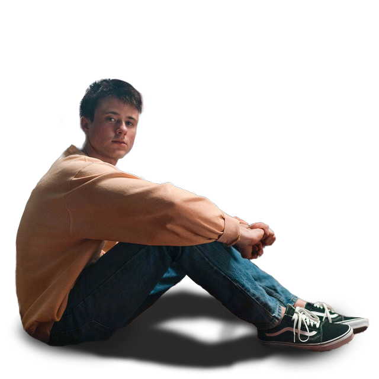

Alec Benjamin in the album Let Me Down Slowly
Alec Benjamin
1994 - Present
Discography
Studio Albums
Mixtapes
- America - 2013
- Narrated for You - 2018
Singles
- Paper Crown - 2014
- End of the Summer - 2016
- I Built a Friend - 2017
- Let Me Down Slowly - 2018
- Boy in the Bubble - 2018
- If We Have Each Other - 2018
- Water Fountain - 2018
- Death of a Hero - 2018
- Outrunning Karma - 2018
- 1994 - 2018
- Must Have Been the Wind - 2019
- Jesus in LA - 2019
- Mind Is a Prison - 2019
- Demons - 2020
- Oh My God - 2020
- The Book of You & I - 2020
- Six Feet Apart - 2020
- Match in the Rain - 2020